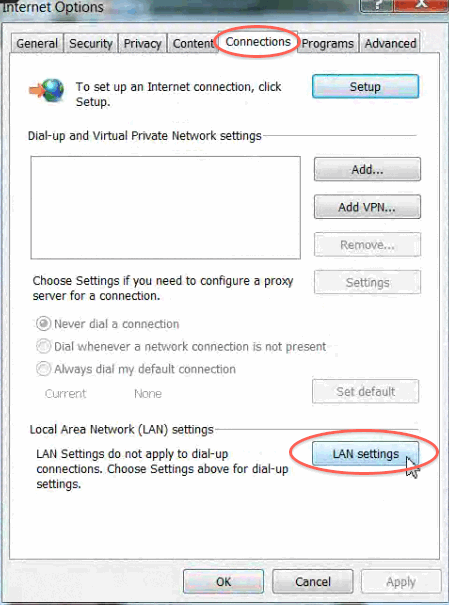
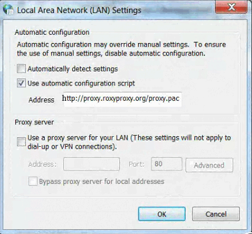
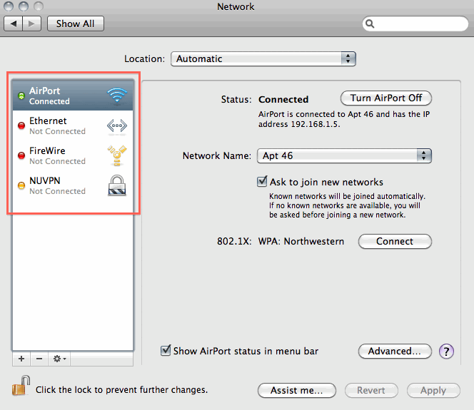
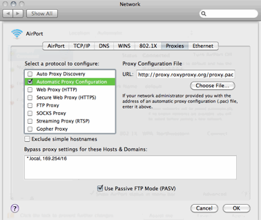
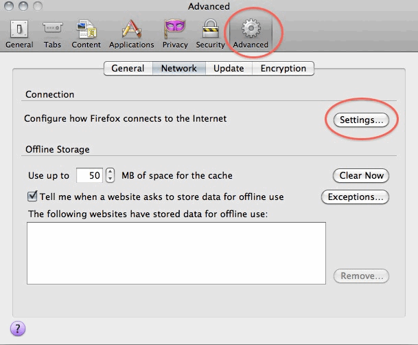

Thank you for participating in this research. Roxy doesn’t need to be installed on your computer, it is a web application, so you need to login and set up communication with it. Setting up communication with Roxy should just take just a few minutes per the instructions below. Using Roxy is designed to be very simple and should not interrupt your normal web browsing except when it enables you to choose your privacy settings periodically. This gives you full control over what Roxy observes or logs.
Please set up Roxy on every web browser you use on every computer you use if possible. Some people just use one web browser such as Internet Explorer, but other people use more than one such as Internet Explorer and Firefox. In the latter case you would need to set up Roxy in both Internet Explorer and Firefox.
If you do not own one or more of the computers you use please ask the owner of the computer if you may set up Roxy on the computer. You may want to send them a link to Roxy’s main page so they can browse to Roxy's about page, use instructions and FAQ. Many organizations will not allow you to setup Roxy on their computers. You are welcome to give your organization my contact information and I can discuss the software with them. The research will be more complete if you are able to install Roxy on all of the computers you use, but if your organization does not allow installation for technical or business reasons that is an expected part of the project.
Go through the setup instructions for each of the web browser(s) on the operating system(s) you use.
- Open Internet Explorer.
- On the main menu at the top of the window go to: Tools > Internet Options > Connections tab > LAN Settings

- Check "Use automatic configuration script" and type in: http://proxy.roxyproxy.org/proxy.pac then uncheck the item that says "Automatically detect settings"

- Choose OK to save the settings.
- Go to any website such as google.com. If Roxy has been configured correctly the Roxy home page will appear http://proxy.roxyproxy.org/. If it does not appear, please double check that you have completed these instructions.
- See Using Roxy for more information now that you have completed setup on this browser. Remember to configure any other web browsers you use.
- A message may appear on Internet Explorer that says, "Intranet settings are now turned off by default. Intranet settings are less secure than Internet settings. Click for options..." Roxy does not compromise your computer's security. This message can safely be ignored. Choose the option "Don’t show this message again"
Back to the list of browsers
- Open Firefox.
- On the main menu at the top of Firefox go to: Tools > Options > At the top of the options window there is an Advanced tab > Network tab > Settings > Automatic proxy configuration URL. Type: http://proxy.roxyproxy.org/proxy.pac
- Choose OK to save the changes and exit the options window.
- Go to any website such as google.com. If Roxy has been configured correctly the Roxy home page will appear http://proxy.roxyproxy.org/. See Using Roxy for more information now that you have completed setup on this browser. Remember to configure any other web browsers you use.
Back to the list of browsers
The Chrome browser uses the same settings as Internet Explorer, so if you have already followed the instructions to setup Roxy with Internet Explorer you don't need to do anything. If you don't use Internet Explorer, please follow the instructions below.
- Open Chrome.
- On the top right of your browser Wrench (customize and control Google Chrome), options > under the hood tab > change proxy settings > LAN Settings > Uncheck "Automatically detect settings". Check "Use Automatic configuration script" > Type in: http://proxy.roxyproxy.org/proxy.pac
- Choose OK to save the changes.
- Go to any website such as google.com. If Roxy has been configured correctly the Roxy home page will appear http://proxy.roxyproxy.org/. See Using Roxy for more information now that you have completed setup on this browser. Remember to configure any other web browsers you use.
Back to the list of browsers
- Open your System Preferences by going to the Apple Menu (The on the top left-hand corner of your screen.) and choosing System Preferences.
- In the System Preferences go to Network. There you will see all of your connection types. On the example below this includes AirPort, Ethernet, FireWire, and NUVPN. In this case AirPort is highlighted because that is the current connection type.

- Choose the Advanced button > Proxies tab. Check "Automatic proxy configuration." Type in http://proxy.roxyproxy.org/proxy.pac

- Choose OK. This brings you back to your Network settings that may include several connection types (see step 2 above). Choose the next connection type, in this example it is called Ethernet. Repeat step 3 for each connection type (in the example image from step 2: AirPort, Ethernet, FireWire, NUVPN).
- When you have finished entering the proxy setting for each connection type, click Apply to save the changes.
- Go to any website such as google.com. If Roxy has been configured correctly the Roxy home page will appear http://proxy.roxyproxy.org/. See Using Roxy for more information now that you have completed setup on this browser. Remember to configure any other web browsers you use.
Back to the list of browsers
- Open Firefox.
- On the menu at the top left of the screen go to: Firefox > Preferences > Advanced tab > Network. Under "Connection" hit "Settings"

- Select the last option "Automatic proxy configuration URL" and type http://proxy.roxyproxy.org/proxy.pac
- Choose OK to save the changes. Exit Firefox’s preferences.
- Go to any website such as google.com. If Roxy has been configured correctly the Roxy home page will appear http://proxy.roxyproxy.org/. See Using Roxy for more information now that you have completed setup on this browser. Remember to configure any other web browsers you use.
Back to the list of browsers
- Open Firefox.
- On the main menu at the top go to: Edit > Preferences > Advanced tab (top right) > Network. Under "Connection" hit "Settings" and choose the last option "Automatic proxy configuration URL" and type http://proxy.roxyproxy.org/proxy.pac
- Choose OK to save the changes. Exit Firefox’s preferences.
- Go to any website such as google.com. If Roxy has been configured correctly the Roxy home page will appear http://proxy.roxyproxy.org/. See Using Roxy for more information now that you have completed setup on this browser. Remember to configure any other web browsers you use.
Back to the list of browsers
The iPhone can be partially configured to use Roxy. Each WiFi network you connect to can be configured when you are connected to it. The iPhone cannot use Roxy when you are connected only to the AT&T mobile network.
- When you are connected to a WiFi network go to Settings > WiFi > then choose the WiFi network’s name. At the bottom of this screen it says "HTTP Proxy" choose Auto and type in http://proxy.roxyproxy.org/proxy.pac in the URL field.
- Choose OK or Apply to save the settings.
- Go to any website such as google.com. If Roxy has been configured correctly the Roxy home page will appear http://proxy.roxyproxy.org/. See Using Roxy for more information now that you have completed setup on this browser. Remember to configure Roxy on each wireless network where you use your iPhone.
Back to the list of browsers
At this time the America Online service cannot be configured to work with Roxy. It would be helpful to the project if you could use another web browser during this study. If this is not possible please contact Ericka.
Back to the list of browsers
Most devices that connect to the web allow you to specify proxy settings and anything that supports a proxy server can use Roxy. You can search online for help setting up a proxy on your device and use this URL for the automatic proxy configuration or PAC file: http://proxy.roxyproxy.org/proxy.pac
Back to the list of browsers
If you have any questions about the software or setup please email roxyhelp@gmail.com. Both Ericka Menchen-Trevino and Chris Karr of Audacious Software, the builder of Roxy, monitor this email so one of us will respond to you quickly if you email this address, depending on who can best resolve your issue.
If you are having an urgent problem with Roxy please call Ericka Menchen-Trevino: 312-725-3681
Back to the list of browsers
|